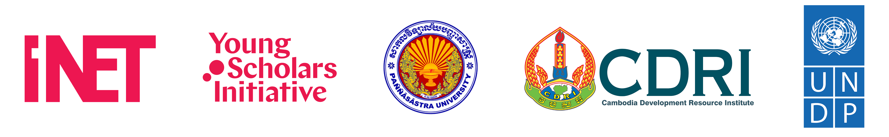

SAERD25
Welcome to the 3rd Southeast Asia Economic Research and Development Conference
Date: October 30-31, 2025
Location: Paññāsāstra University of Cambodia, Siem Reap (PUCSR), Siem Reap, Cambodia
Join us for the premier conference in [field/industry], bringing together leading researchers, practitioners, and industry experts to explore cutting-edge developments and future directions in [specific area].
Theme: “[Conference Theme]”
This year’s theme focuses on [brief description of theme]. We invite participants from around the world to engage in discussions, share insights, and collaborate on addressing the challenges and opportunities in our field.

Important Dates
Abstract Submission: March 15, 2025
Early Bird Registration: May 1, 2025 Regular Registration: June 30, 2025
Conference Dates: July 15-17, 2025
Keynote Speakers
### Prof. Sovannroeun Samreth Professor, Saitama University, Japan
### Prof. Phanith Chou Associate Professor of Environmental Economics, Royal University of Phnom Penh, Cambodia
### Prof. Maria Garcia Director, Center for Advanced Research
### Dr. David Chen Principal Researcher, Tech Corporation
Conference Highlights
- 3 Days of engaging sessions and workshops
- 4 Keynote presentations by leaders in the field
- 20+ Parallel sessions covering diverse topics
- Networking opportunities with peers and experts
- Poster Session showcasing innovative research
- Conference Dinner at a premier venue
Annual Research Conference 2025
Join us for the Annual Research Conference 2025, bringing together leading researchers and practitioners in the field of [Your Field]. This year’s theme is “[Conference Theme]” with a focus on innovative approaches and emerging trends.
Conference Details
Date: July 15-17, 2025
Location: Conference Center, University Name
Registration: Register Here
Keynote Speakers
Dr. Jane Smith

Professor, University of Science
Dr. Smith is renowned for her groundbreaking work in [research area]. With over 100 publications and multiple patents, she has revolutionized how we understand [specific topic]. Her recent book “[Book Title]” has been acclaimed as a seminal text in the field.
Dr. Robert Johnson

Chief Scientist, Research Institute
Dr. Johnson leads the [Department Name] at Research Institute, focusing on [research focus]. His team has developed several innovative technologies that have been implemented in [industry/field]. He has been recognized with the [Award Name] for his contributions.
Prof. Maria Garcia

Director, Center for Advanced Research
Prof. Garcia has pioneered new methodologies in [research area], leading to significant advancements in [field]. She serves on the editorial boards of several prestigious journals and has chaired numerous international conferences.
Dr. David Chen

Principal Researcher, Tech Corporation
With a background spanning both academia and industry, Dr. Chen brings unique insights to [research area]. His work bridges theoretical foundations with practical applications, resulting in [notable achievements].
Conference Program
Day 1: July 15, 2025
| Time | Event | Location |
|---|---|---|
| 8:00 - 9:00 | Registration & Breakfast | Main Lobby |
| 9:00 - 9:30 | Opening Remarks | Auditorium |
| 9:30 - 10:30 | Keynote: Dr. Jane Smith | Auditorium |
| 10:30 - 11:00 | Coffee Break | Foyer |
| 11:00 - 12:30 | Panel: Future Directions in [Research Area] | Auditorium |
| 12:30 - 14:00 | Lunch | Dining Hall |
| 14:00 - 15:30 | Parallel Sessions A | Rooms 101-104 |
| 15:30 - 16:00 | Coffee Break | Foyer |
| 16:00 - 17:30 | Parallel Sessions B | Rooms 101-104 |
| 18:00 - 20:00 | Welcome Reception | Rooftop Garden |
Day 2: July 16, 2025
| Time | Event | Location |
|---|---|---|
| 8:30 - 9:00 | Breakfast | Main Lobby |
| 9:00 - 10:00 | Keynote: Prof. Maria Garcia | Auditorium |
| 10:00 - 10:30 | Coffee Break | Foyer |
| 10:30 - 12:00 | Parallel Sessions C | Rooms 101-104 |
| 12:00 - 13:30 | Lunch & Poster Session | Grand Hall |
| 13:30 - 15:00 | Workshop: [Workshop Title] | Room 201 |
| 15:00 - 15:30 | Coffee Break | Foyer |
| 15:30 - 17:00 | Parallel Sessions D | Rooms 101-104 |
| 19:00 - 22:00 | Conference Dinner | City Restaurant |
Day 3: July 17, 2025
| Time | Event | Location |
|---|---|---|
| 8:30 - 9:00 | Breakfast | Main Lobby |
| 9:00 - 10:00 | Keynote: Dr. Robert Johnson | Auditorium |
| 10:00 - 10:30 | Coffee Break | Foyer |
| 10:30 - 12:00 | Parallel Sessions E | Rooms 101-104 |
| 12:00 - 13:30 | Lunch | Dining Hall |
| 13:30 - 15:00 | Keynote: Dr. David Chen | Auditorium |
| 15:00 - 15:30 | Coffee Break | Foyer |
| 15:30 - 16:30 | Panel: Industry-Academia Collaboration | Auditorium |
| 16:30 - 17:00 | Closing Remarks & Awards | Auditorium |
Parallel Sessions
Sessions A (Day 1, 14:00 - 15:30)
- A1: [Topic] - Room 101
- A2: [Topic] - Room 102
- A3: [Topic] - Room 103
- A4: [Topic] - Room 104
Sessions B (Day 1, 16:00 - 17:30)
- B1: [Topic] - Room 101
- B2: [Topic] - Room 102
- B3: [Topic] - Room 103
- B4: [Topic] - Room 104
Sessions C (Day 2, 10:30 - 12:00)
- C1: [Topic] - Room 101
- C2: [Topic] - Room 102
- C3: [Topic] - Room 103
- C4: [Topic] - Room 104
Sessions D (Day 2, 15:30 - 17:00)
- D1: [Topic] - Room 101
- D2: [Topic] - Room 102
- D3: [Topic] - Room 103
- D4: [Topic] - Room 104
Sessions E (Day 3, 10:30 - 12:00)
- E1: [Topic] - Room 101
- E2: [Topic] - Room 102
- E3: [Topic] - Room 103
- E4: [Topic] - Room 104
Registration Information
| Package | Early Bird (Until May 15) | Regular |
|---|---|---|
| Student | $150 | $200 |
| Academic | $300 | $350 |
| Industry | $450 | $500 |
Registration includes: Access to all sessions, conference materials, lunch and refreshments, welcome reception, and conference dinner.
Contact
For inquiries about the conference, please contact us at conference-email@example.com.
Sponsors

Latest Updates
- April 1, 2025: Abstract submission deadline extended to March 15
- March 15, 2025: Registration now open
- March 1, 2025: Call for papers announced
- February 15, 2025: Conference dates confirmed